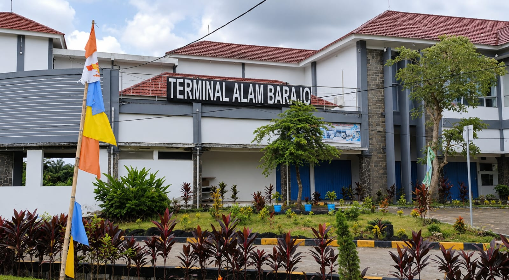
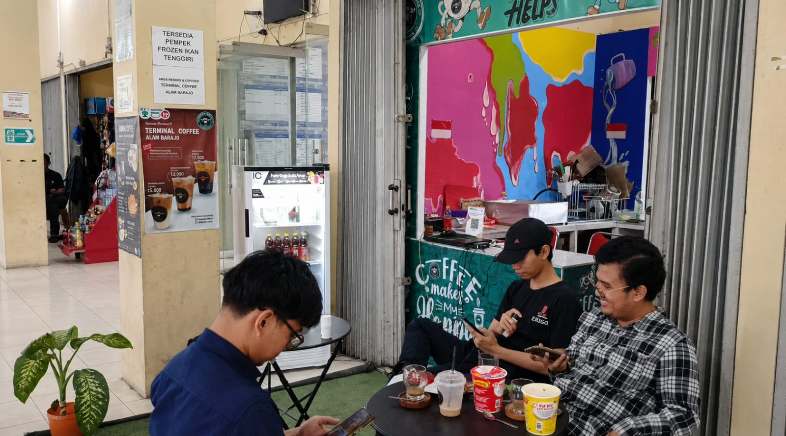
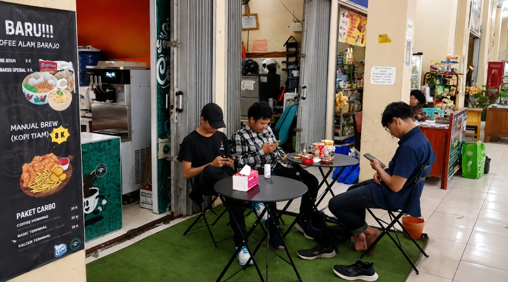
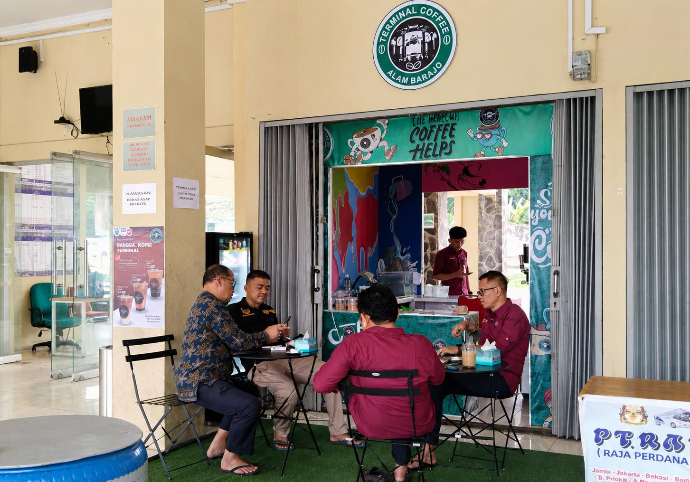
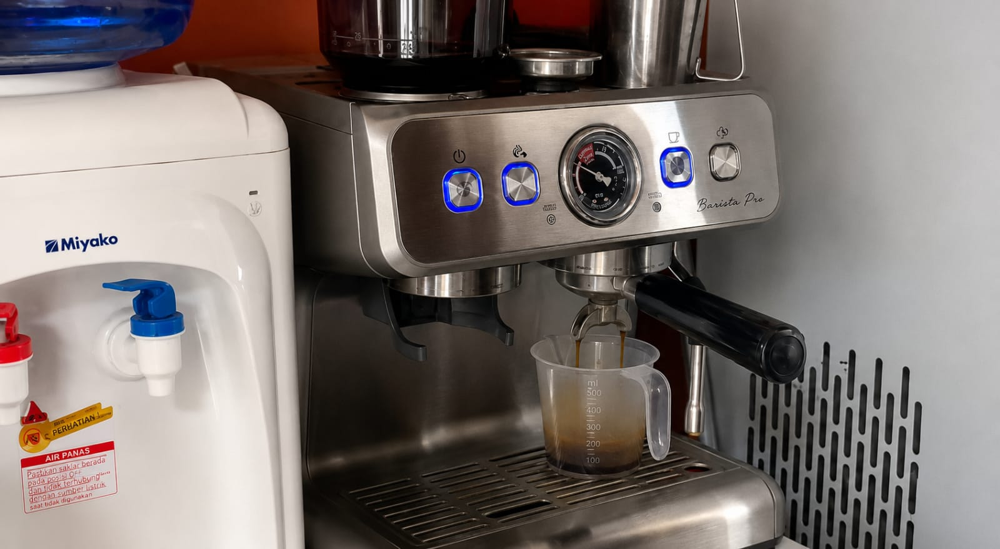
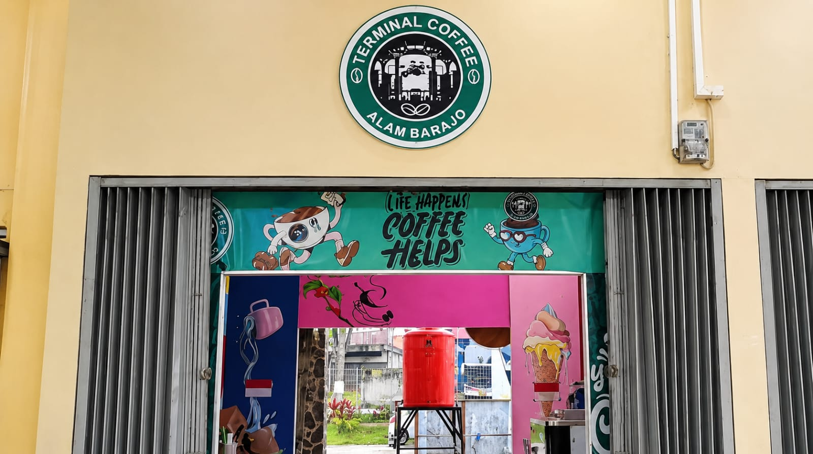
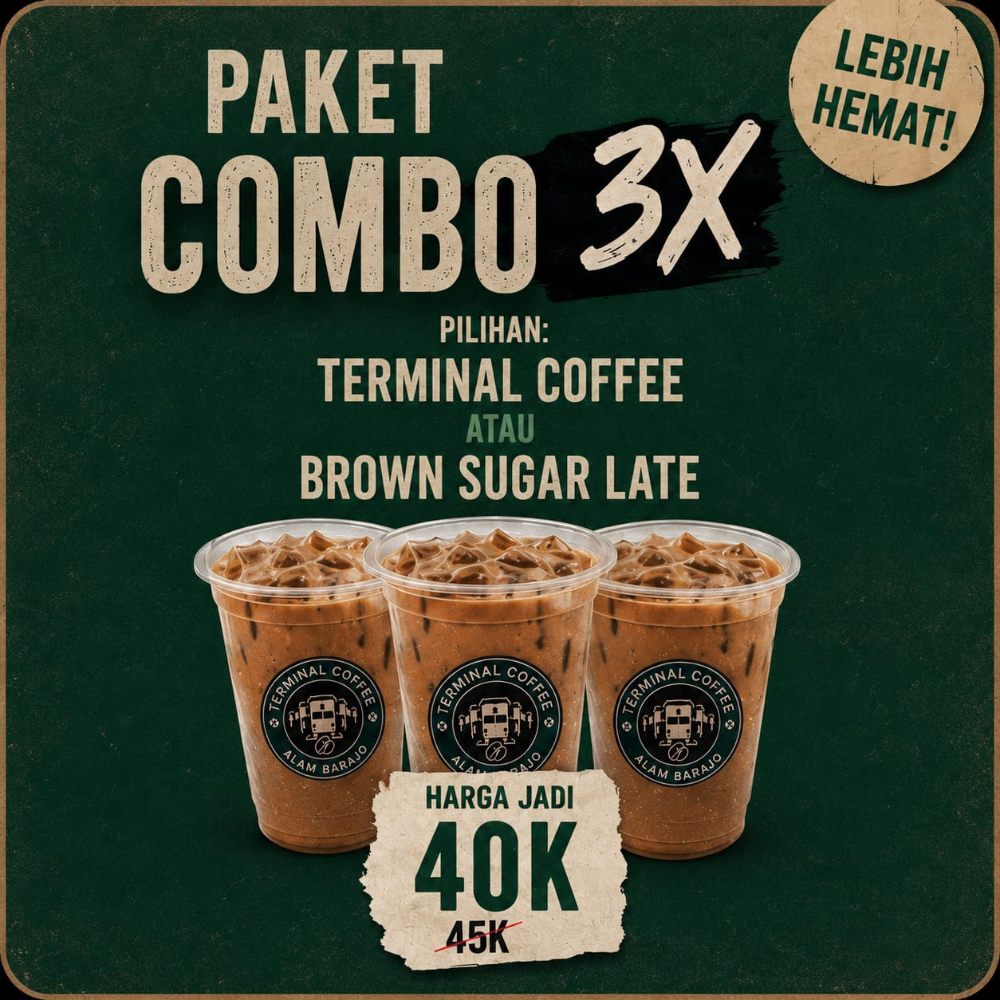
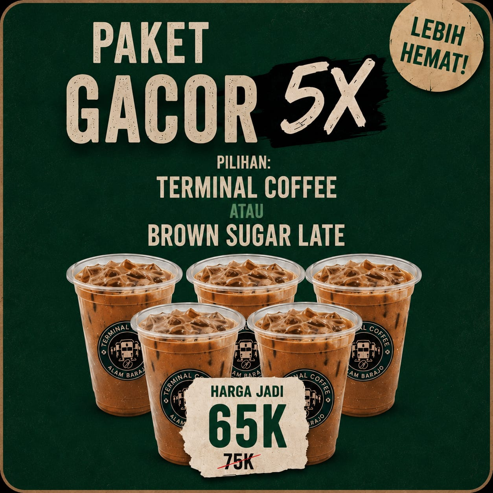

Best Seller
Menu & Harga
Pilihan lengkap untuk semua selera, harga bersahabat
Best Seller

Nikmati kopi berkualitas dengan harga terjangkau mulai Rp 12.000, cepat, praktis, dan selalu siap menemani harimu di Terminal Alam Barajo, Simpang Rimbo, Kota Jambi. Buka setiap hari pukul 10.00–19.00 WIB.
Pilihan lengkap untuk semua selera, harga bersahabat
Terminal Coffee Alam Barajo adalah cafe di Terminal Alam Barajo, kawasan Simpang Rimbo, Kota Jambi. Kami menghadirkan kopi berkualitas dengan harga terjangkau, diracik dari bahan pilihan dan disajikan dengan penuh perhatian. Tempat yang nyaman untuk bersantai, berkumpul, meeting, atau sekadar menikmati waktu sendiri sambil ngopi.
Sebagai cafe murah di Simpang Rimbo yang berlokasi di kawasan terminal, kami memastikan setiap tamu mendapat pengalaman ngopi yang memuaskan tanpa menguras kantong. Harga terminal, kualitas kota.
Suasana dan momen di Terminal Coffee Alam Barajo









Cerita dan info seputar Terminal Coffee Alam Barajo
Siapa sangka, di balik hiruk-pikuk salah satu terminal bus terbesar di Sumatera, tersembunyi sebuah kedai kopi yang kini menjadi tempat nongkrong favorit warga Kota Jambi...
Baca Selengkapnya →Mencari kopi murah di Jambi yang tidak mengecewakan soal rasa? Terminal Coffee Alam Barajo telah membuktikan bahwa harga terjangkau dan kualitas premium bisa berjalan beriringan...
Baca Selengkapnya →Kamu sedang mencari kedai kopi di Alam Barajo yang tidak hanya enak tapi juga nyaman untuk berlama-lama? Terminal Coffee Alam Barajo adalah jawabannya...
Baca Selengkapnya →Temukan kami di Terminal Alam Barajo, Simpang Rimbo
Kopi murah di Terminal Alam Barajo, kawasan Simpang Rimbo, Kota Jambi
Pesan akan dikirim langsung ke WhatsApp kami